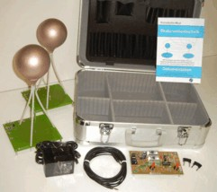

Every mirrored page of this site, in the site's own reading order, as one
document. Internal links jump within this page.
Source: https://meyl.eu/go/indexb830.html
Pages: 36 (1 reachable from index.html,
35 not linked)
Generated 2026-08-13 06:47:40Z by scripts/site_to_allpages.py
In the water resonance, the DNA is sending a longitudinal wave that propagates in the direction of the magnetic field vector. The computed frequencies from the structure of the DNA agree with those of the bio-photon radiation as predicted. The optimization of efficiency by minimizing the conduction losses leads to the double helix structure of DNA. The vortex model of the magnetic scalar wave not only covers many observed structures within the nucleus from perfect, but also introduces the hyperboloid channels in the matrix, if two cells communicate with each other.
Physical results revealed in 1990 form the basis of the essential component of a potential vortex scalar wave. The need for an extended field theory approach has been known since 2009 by the discovery of magnetic monopoles. For the first time this provides the opportunity to explain the physical basis of life not only from the biological discipline of Science understanding only. Nature covers the whole spectrum of known scientific fields of research for the first time this interdisciplinary understanding is explaining such complex relationships.
Decisive are the characteristics of the potential vortex. With its concentration effect, it provides a miniaturization down to a few nanometers, which allows the outrageously high information density in the nucleus for the first time.
Here for the first time magnetic scalar wave theory explains dual based pair-stored information of the genetic code and a process of converting into an electrical modulation to so to say, "piggyback" information transfer from the cell nucleus to another cell. At the receiving end the reverse process takes place in writing, a chemical structure physically. The energy required to power the chemical process, comes from the scalar wave itself.
The point of a seminar is, to deepen, to practise and, as far as possible, to practically apply the material of a lecture. The knowledge of the content of the lecture hence is a prerequisite for the participation.
For the reader of this book that’s tantamount to the recommendation, to have read the first part, the edition belonging to the lecture, before<i>. Here the questions concerning the „electromagnetic environmental compatibility“ are asked and the necessary bases for their answering is laid. Also practical consequences for various areas of science are indicated.
The deepening most suitable should be made in form of a seminar, subdivided into the here presented part 2 to the energy technical seminar and a part 3 to the information technical seminar. Part 2 correspondingly concerns the energy technical aspect of electric or magnetic longitudinal waves, whereas part 3 is dedicated to the information technical aspect<ii>. Because it concerns a book which merely for reasons of usefulness is published in three parts, the chapters are consecutively paginated. References to chapter 1 to 9 hence automatically relate to part 1. The numbers of the figures and tables as a rule are identical with those of the chapters, in which they are discussed.
The seminar should lead on over the pure reading, consuming or listening and should stimulate to join in. All involved persons may and should give ideas and ask questions, even if these may sound little orthodox. The scientific working method takes, that is struggled for answers and even is argued, if necessary. To reach this goal, it mustn’t exist any obligation or censorship, neither for the leader of the discussion nor for the participants of the seminar.
The seminar is being carried out since the summer semester 1997. The works of the seminar written by students treat the knowledge of text books of the respective theme. Following the lecture the answers are discussed and compared to those of the theory of objectivity<i> and other models of explanation. This procedure in this edition belonging to the seminar is reflected at some points, if for instance a chapter is completed with a „discussion“.
The first edition of this 2nd part still was incomplete and has been handed out to the participants of a congress in Switzerland instead of a manuscript belonging to the lecture the 17th of Nov 1998. The here presented second edition in the meantime to a large extent is complete, but surely not yet perfect. In accordance with the experience made with the first part of the book also for this 2nd part a third and revised edition, in which the ideas of the participants of the seminar and of the readers find consideration, will be due to be dealt with after a year. The reader of the second edition has to console himself with the fact that a lively seminar constantly is changing and developing further. And that has to be so!
Villingen-Schwenningen, January 1999
<i>: K. Meyl: Electromagnetic environmental compatibility, Part 1, Edition belonging to the
lecture, INDEL Verlagsabt. Villingen-Schwenningen, 1996, 3rd edition. 1998,
ISBN 3-98O2 542-8-3
<ii>: K. Meyl: Electromagnetic environmental compatibility, Part 3, Edition belonging to the
information technical seminar, INDEL Verlagsabteilung, at the earliest from Dec. 2000,
ISBN 3-98O2 542-7-5
Table of contents
10. Oscillating interaction
10.1 Kepler’s laws
10.2 Unknown interaction
10.3 Harmony of the alternating current engineers
10.4 Four fundamental interactions
10.5 Resonating interaction
11. The growing globe
11.1 Long-distance effect of the neutrinos
11.2 Model of expansion
11.3 Ancient Egyptian legend of Genesis
11.4 Inner structure of the earth
11.5 Earth’s core as a converter of neutrinos
11.6 Speed of growth
11.7 Conservation of angular momentum
11.8 Set of difficulties concerning the change of magnetization
11.9 The weakly damped moon
11.10 Calculation of celestial mechanics
11.11 The biblical age
12. New cosmology
12.1 Concerning the formation of our solar system
12.2 The birth of the planets
12.3 The derivation of the Titius-Bode law
12.4 The hollow planet
12.5 Concerning the formation of the universe
12.6 Counter examples concerning the 2nd law of thermodynamics
12.7 Entropy destroying potential vortices
13. Recording of space and time
13.1 The measuring technical debacle
13.2 The clock paradox
13.3 The Tamarack mines experiment
13.4 Field dependent linear measure
13.5 Experiences from space travel
13.6 Spherical aberration
13.7 Irony of the measuring technique
13.8 Discussion of the cosmological insights
14. The way towards free energy
14.1 The liberalization of the energy markets
14.2 The consequences of the liberalization
14.3 The chances of the wind energy
14.4 The chances of being self-sufficient concerning energy
14.5 The space energy technology of nature
14.6 The gap in the energy balance of man
14.7 Carl Freiherr von Reichenbach
14.8 Cold fusion and Genesis
14.9 Photosynthesis
14.10 How nature materializes
14.11 Lightning
14.12 Ball-lightning
14.13 Discussion concerning the neutrino conversion
15. Principle of functioning of space energy
15.1 The course of the field lines
15.2 Gravitation
15.3 Systematizing the interactions
15.4 Magnetic force converter
15.5 The rail gun
15.6 Unipolar induction
15.7 Tending to instability
15.8 Unipolar field configuration
15.9 The Testatika
15.10 The secret of the Testatika
15.11 The key to free energy
16. Space energy technology (SET)
16.1 The unipolar generator
16.2 Derivation of Maxwell’s field equations
16.3 SET-devices with rotating magnetic fields
16.4 Commentary concerning magnetic SET-devices
16.5 RQM and the space quanta manipulator
16.6 SET-devices with pulsed magnetic fields
16.7 SET-devices with Möbius winding
16.8 Möbius converter of Seike and Coler
16.9 Tesla’s flat coil
16.10 The secret of the flat coil
16.11 Discussion concerning the technology of the neutrino collectors
17. Technical use of the weak interaction
17.1 Radioactivity caused by neutrinos
17.2 Nikola Tesla, the discoverer of the neutrino radiation
17.3 Transmutation and reduction of radioactivity
17.4 The Patterson Power Cell
17.5 Report concerning the cold fusion
17.6 Water-Fuel-Cell technology
17.7 Unconventional electro analysis
17.8 Materialization of neutrinos
17.9 Oscillation of size and luminescence
17.10 Phosphorescence and sonoluminescence
17.11 Discussion concerning the use of the weak interaction
18. Physical phenomena
18.1 Water as a catalytic converter for neutrinos
18.2 Background and zero point radiation
18.3 The Casimir effect
18.4 Effects under high tension
18.5 Flying discs
18.6 Propulsion with neutrinos
18.7 Antigravitation or levitation
18.8 Discussion concerning the effect of closed field lines
Nikola Tesla was one of the world's most gifted inventors. He developed ideas and technologies which were far ahead of his time. Many argue that Tesla singlehandedly created the 21st century. Until recently, the ideas behind many of his most innovative inventions were shrouded in mystery but recently, a German physicist has developed an elegant theory which derives much of Tesla's work.
Professor Konstantin Meyl has a background in electrical engineering and field physics. His extensive knowledge of Eddy Currents made him wonder about vortices in electromagnetic theory, and specifically with regard to Tesla's work.
Dr. Meyl discovered a fundamental mistake in Maxwell's Equations. By fixing these equations, Meyl was able to elegantly derive Tesla's results as well as explain many other unexplained physical effects in science. Meyl's theory, like all good theories explain all current results but is able to extend scientific explanation to include results that were previously outside the theory.
By beginning with Faradays law of induction as an axiom, Meyl derived relevant properties of the new concept of electric vortices. The potential vortex which Meyl derives propagates as a scalar wave through space; it is a longitudinal electric wave whose properties have already been established a century ago by Nicola Tesla. Professor Meyl has used these principles to develop development kits which can replicate some of Tesla's most fundamental work in energy transmission through space. The consequences of Meyl's theory are profound; they prove that free space has an abundant supply of energy and if developed properly as envision by Tesla a century ago, can result in environmentally benign clean energy for humanity - at a time when it is desparately needed.
(Text by James Gien Varney-Wong)
With the current RFID -Technology the transfer of energy takes place on a chip card by means of longitudinal wave components in close range of the transmitting antenna. Those are scalar waves, which spread towards the electrical or the magnetic field pointer.
In the wave equation with reference to the Maxwell field equations, these wave components are set to zero, why only postulated model computations exist, after which the range is limited to the sixth part of the wavelength.
A goal of this paper is to create, by consideration of the scalar wave components in the wave equation, the physical conditions for the development of scalar wave transponders which are operable beyond the close range. The energy is transferred with the same carrier wave as the information and not over two separated ways as with RFID systems. Besides the bi-directional signal transmission, the energy transfer in both directions is additionally possible because of the resonant coupling between transmitter and receiver.
First far range transponders developed on the basis of the extended field equations are already functional as prototypes.
A further developing of the worlds first and very successful experimental-kit in a case with open work area above the Tesla-coil especially developed for biological-technical experiments.
The demand of the scientific world for reproducibility of the experiments has been satisfied with the construction which is based on Tesla´s ideas and the disposal of the demo-kit (800€) and the experimental-kit (1400€). Inspired by six at any time reproducible main experiments of the special characteristics of scalar wave transmissions from the book "Scalar Wave Technology" several researchers did some further experimentation, mainly interested in the biological properties of the scalar wave. Especially these researchers demanded a specifically for their research projects improved type of construction, because they experienced some handling difficulties with the more open test arrangement.
So this was the reason for developing our scalar wave device (Skalarwellengerät) SWG-A. Every device is handmade and consists of two columnar cases, which contain the antennas and electronic. The built-in timer is very functional and easy to use - as the rest of the device. You just have to connect the two towers with the connection cable and plug in the power supply unit in order to start your experiments.
A very special ability of the scalar wave device is the circular and patent Teslacoil, which is accessible from above. Within this area you can place substances with biological information directly in the field of the pancake coil. So that were the required specifications of the scalarwave-researchers for further experiencing of the biological-technical properties and their desire to modulate "biological information" to the carrier wave.
We ask for understanding that we will not write own experimentation guide within the field of biology as electronics manufacturers. We are building these devices in terms of our customers and would like to wish all the researchers out there many successful experiences with this brand new 'Skalarwellengerät' "SWG-A" for the welfare of human and science.
This device is available in our shop.
As a result of common demand and frequently asked questions during the breaks and after the recitations of Prof. Dr. Meyl (e.g. how does an energy transmission line work? and what kind of single components have to be used? etc) we decided to develop a demonstration-kit and an experimentation-kit to allow interested practitioners to gain experience and to make experiments by themselves.
So with these two kits you are able to research the characteristics of Tesla coils, dependency of the resonant frequency concerning position and size of the ball electrode and varieties of the systems resonance depending on changes of the distance between transmitter and receiver by yourself.
The main goal is to achieve reproducible measurements, which cannot be done by a simple instruction guide but otherwise doubters often only believe in results of measurements acquired by their own devices. Therefore connection possibilities for external measuring devices are provided.

The Demo-Kit contains a simple waveform generator from 4 MHz up to 8 MHz, a pair of pancake coils with different resistance usable in various configurations as well as the required accessories. It allows to arrange a complete scalar transmission line without further equipment e.g. for demonstration purposes. It's possible to purchase the different components separately. (For those who already own adequate equipment or want to expand the set).
The Experimental-Kit contains an extended waveform generator from 135 kHz up to 10 MHz and an additional frequency counter and two additional pairs of pancake coils with half and twice of the wirelength. A specification of the set with theoretical explanations and practical instructions about the setup is also included in both kits.
We are very interested in your measurements and conclusions and would be pleased, if you could send us your results. It would be helpful, if these are structured like the experiment descriptions in the book "Scalar Wave Technology". Both kits are available in our shop.
Before the introduction into the topic, the title of the book should be first explained more in detail. A "scalar wave" spreads like every wave directed, but it consists of physical particles or formations, which represent for their part scalar sizes. Therefore the name, which is avoided by some critics or is even disparaged, because of the apparent contradiction in the designation, which makes believe the wave is not directional, which does not apply however.
The term "scalar wave" originates from mathematics and is as old as the wave equation itself, which again goes back on the mathematician Laplace. It can be used favourably as a generic term for a large group of wave features, e.g. for acoustic waves, gravitational waves or plasma waves.
Seen from the physical characteristics they are longi-tudinal waves. Contrary to the transverse waves, for example the electromagnetic waves, scalar waves carry and transport energy and impulse. Thus one of the tasks of scalar wave transponders is fulfilled.
The term "transponder" consists of the terms transmit-ter and responder, describes thus radio devices which receive incoming signals, in order to redirect or answer to them. First there were only active transponders, which require a power supply from outside. For some time passive systems were developed in addition, whose receiver gets the necessary energy at the same time conveyed by the transmitter wirelessly.
After the state of the art several high frequency channels are necessary around the two parts of a transponder system to couple one with another.
The transfer of energy from the fundamental unit to the Transceiver takes place with a low frequency, in order to obtain, as a consequence of the high wavelength, the largest range as possible. The Data flow in opposite direction however takes place with high frequencies, which usually already lie in the range of the cellular phone network. Additionally, if data is to be conveyed from the fundamental unit to the Transceiver, then a third channel with an own transmitter and receiver is necessary.
The enormous expenditure can be reduced to only one channel with substantially larger range. Basis is the extended field theory formulated by me, which forms the emphasis in the available paper.
Two co-workers of my institute, the 1. Transfer centre for scalar wave technology (www.etzs.de), have demon-strated 2003 on a congress in the technology park of Villingen Schwenningen for the first time publicly, on the ISM frequency of 6.78 MHz, a scalar wave trans-ponder in function consisting of a bi-directional LAN connection to exchange data between two PC’s coupled with a transfer of energy for the passive interface map over a distance of 30 m.
I think, the indeterminable trend required for new technologies and applications for transponders require an extended field theory, to which this paper can give a valuable contribution.
The kit provides the possibility to reproduce Tesla's energy transfer experiments. We have demonstrated the energy transfere to an airplane and to a boat on various congresses and fairs. With this kit your imagination is the limit.
The kit consists of:
The function generator FG1power (front view)
(Back view)
A special cable for push-pull operation
An engine with airscrew for the construction of an airplane
An engine with cardan shaft and ship propeller for the construction of a boat
Coulomb's law stating that the electric field decreases proportionally to the square of the distance (E ~ 1/r²) is equal in meaning to a length contraction dependent on the field. Based on this, the mass defect of an atomic nucleus is determined mathematically accurately. Furthermore, the model of potential vortices yields accurate values for the diameters and shapes of nuclei, which are always compared to the known quantum properties. The riddle of the halo nuclei is solved on the way.
The strong interaction is simply a magnetic attraction of the nucleons. The atomic shell kept together by the electric field forces is calculated afterwards. Even this is based upon the dependency of the radius values on the field. An equation is derived with which the atomic radii of all known elements and partially even their ions may be calculated. The correlation to known measurement values was successful, across the domain from Helium to farther than plutonium, with a precision never seen before, which gives reason for the validity of the model. Thoughts on monatomic structure as a prerequisite for the application of cold fusion and nanotechnology constitute the end of the book.
This kit enables you to construct an energy transmission line according to Tesla, as it has been demonstrated by us on various fairs and congresses. The engines for an airplane and a ship are enclosed. With a minimum power of 10 watts your imagination is the only limit when choosing the load for the receiver. This device even lights fluorescent tubes at the receiver - StarWars lightsaber like.
From an extended vortex and field theory to a technical, biological and historical use of longitudinal waves.
Edition belonging to the seminar (part 1 - 3) Electromagnetic Environmental compatibility
From Maxwells field equations only the well-known (transverse) Hertzian waves can be derived, whereas the calculation of longitudinal scalar waves gives zero as a result. This is a flaw of the field theory, since scalar waves exist for all particle waves, like e.g. as plasma wave, as photon- or neutrino radiation.
Starting from Faradays discovery, instead of the formulation of the law of induction according to Maxwell, an extended field theory is derived, which goes beyond the Maxwell theory with the description of potential vortices (noise vortices) and their propagation as a scalar wave, but contains the Maxwell theory as a special case. With that the extension is allowed and doesnt contradict textbook physics.
Besides the mathematical calculation of scalar waves this book contains a voluminous material collection concerning the information technical use of scalar waves, if the useful signal and the usually interfering noise signal change their places, if a separate modulation of frequency and wavelength makes a parallel image transmission possible, if it concerns questions of the environmental compatibility for the sake of humanity (bio resonance, among others) or to harm humanity (electro smog).
La guerre des ondes scalaires est toujours d'actualité, elle détermine notre politique, mais elle retombe facilement dans l'oubli. Les médias se taisent et nous n'apprenons rien de plus d'eux, qu'une attaque a bien eu lieu. Seule la politique réagit. Il s'agit d'une guerre froide, dont les armes restent secrètes.
L'onde scalaire est décrite mathématiquement grâce à l'équation d'onde de Laplace, et pas par l'équation de Maxwell telle qu'elle est à l'heure actuelle. L'auteur, connu pour ses recherches sur les ondes scalaires, pouvait dériver celleci grâce à un élargissement ciblé des équations de champ, dans laquelle la 3è équation de Maxwell est différente de zéro. Mais celui qui croit traiter cela scientifiquement, se trompe, car il va être bafoué et combattu. L'auteur sait, ce qu'il rapporte, car il l'a lui-même vécu.
Les ondes scalaires ont été, depuis leur découverte par Nikola Tesla, de par l'expérimentation dans la Tunguska et de par les connaissances entourant ce que l'on sait de la cloche des nazis (image de couverture) suivies jusqu'à aujourd'hui. Les crop circles qui servent de test à des tirs d'ondes scalaires à distance, comme leur utilisation en tant qu'arme de guerre entre l'Ouest et l'Est, dessinent l'image de cette guerre des ondes scalaires.
Inhalt: Vorstellung der neuen und um Versuchsberichte
erweiterten Dokumentation zu den Sets des 1.TZS
Ort: D-78048 Villingen-Schwenningen, Hermann-Schwer-Str. 3 ;
Konferenzraum: Betriebsrestaurant im InnovationsPark VS (ausgeschildert ab
der THOMSON-Pforte, Anreise unter www.tpvs.de).
Inhalt: Einsatzmöglichkeiten von Skalarwellen in der Medizin
Ort: D-78048 Villingen-Schwenningen, Hermann-Schwer-Str. 3 ;
Konferenzraum: Betriebsrestaurant im InnovationsPark VS (ausgeschildert ab
der THOMSON-Pforte, Anreise unter www.tpvs.de).
Content:
Extended/Unconventional Electromagnetic Theory.
Organized by Eva Gescheidtova, Brno University of Technology, Czech Republic, Chaired by Ing. Radek Kubasek, Jan Mikulka
Location: Moscow State Institute of Radio Engineering, Electronics and Automation (MIREA), Prospekt Vernadskogo, 78, Room G in Session 1A7
About the discovery of the potential vortex
and the magnetic scalar wave
Content:
- TESLATEC or DESERTEC?
- About the extended vortex and field theory
- About the Biological Effectiveness
of longitudinal magnetic waves
- About Neutrino Power
and the technical use of Scalar Waves
Location: Marriott Pyramid North 5151 San Francisco Rd. NE
Albuquerque, NM 87109, Phone: (505) 821-3333
Geburtstag von Nikola Tesla im Wasserkraftmuseum Ziegenrück
Inhalt:
- Kurzer einführender Beitrag von Rainer Knauer
- Vortrag von Herrn Prof. Dr.-Ing. Konstantin Meyl, Hochschule Furtwangen, anlässlich des 156. Geburtstags von Nikola Tesla "Biographie über den genialen Erfinder und Experimentalphysiker Nikola Tesla,
die Aktualität seines Lebenswerkes bei der Bewältigung der anstehenden Energieprobleme"
- Vortrag von Herrn Jürgen Brachmann, von der Interessengemeinschaft Energiestammtisch "Nikola Tesla und seine Spulen" (ca. 30 min.)
- Votrag von Herrn Andreas Schmidt, Vattenfall, Leiter des Wasserkraftmuseums Ziegenrück "Experimentalvortrag und ausgewählte Experimente nach Erfindungen von Nikola Tesla"
- Diskussion nach allen Beiträgen
Ort: Treffen in der Gasstätte am Wasserkraftmuseum ab 17.00 Uhr (Möglichkeit zum Abendessen und Gesprächen)
Expertentreffen im Technologiepark Villingen-Schwenningen
Betriebsrestaurant im InnovationsPark Villingen-Schwenningen; Herrmann-Schwer-Str. 3, 78048 Villingen-Schwenningen (ab der THOMSON-Pforte ausgeschildert)
Freitag, 01. April, 09:30 - 18:30 Uhr: Vortrag von Prof. Dr. Konstantin Meyl "Elementarteilchenphysik"; Quantenphysik in der neuen Sicht der Wirbelphysik: Grundzüge der Wirbelphysik, Objektivität statt Relativität, Potentialwirbel, Monopole, Stabilität, Atommodell, Gravitation, Wirbelberechnung der Quanteneigenschaften im Standardmodell der Elementarteilchen, Vergleich mit Messwerten, Wechselwirkungsproblematik, Neutrinomodell
Samstag, 02. April, 09:00 - 18:30 Uhr: 7. Expertentreffen und Erfahrungsaustausch; Einsatzmöglichkeiten von Skalarwellen in der Medizin, geladen sind alle, die mit dem Experimentierset oder dem Skalarwellengerät SWG arbeiten oder arbeiten wollen und eigene Erfahrungen mit dem Einsatz von Skalarwellen gesammelt haben.
Sonntag, 03. April, 09:30 - 17:00 Uhr: Präsentation und Therapeuten-Erfahrungen; In Ergänzung zum Erfahrungsaustausch vom Vortag finden praktische Vorführungen von Skalarwellengeräten in der Medizin statt
International Conference of the Korean association for Space Energy
Inhalt: Concepts of Space Energy by Prof. Konstantin Meyl PhD.
supported by the Korean Ministry (of E&D) and the National University of Seoul
Ort: Seoul, South-Korea
In the case of interest please contact us directly by email: prof@meyl.eu
15. September 2010
Drahtlose Energieübertragung
Inhalt: Wir laden ein in die Gasmaschinenzentrale zu einer Vorführung des Modells einer drahtlosen Energieübertragung - verbunden mit einem Treffen mit Herrn Prof. Dr.-Ing. Konstantin Meyl von der Hochschule Furtwangen. „Erfahrungsaustausch und Diskussion über Anwendungsmöglichkeiten der drahtlosen Energieübertragung
in der Gegenwart und in der Zukunft“.
Teil 1: Tesla, Erfinder der Drehstrom- und Rundfunktechnik
Teil 2: Drahtlose Energieübertragung / u.a. RFID-Transponder
Inhalt: Den roten Faden bilden eine Auswahl der wichtigsten von insgesamt 700 Patenten zur elektrischen Energietechnik, von der Erfindung des Asynchronmotors und der Mehrphaseninduktion, über seine Experimente zur Beleuchtungstechnik, zur Supraleitung und zum Elektronenmikroskop, seine Erfindung des Elektrolytkondensators, des Koaxialkabels und der Schmelzsicherung bis hin zu seinen Bemühungen um die Rundfunktechnik. Tesla gilt auch als der Begründer der Diathermie und der biologischen Wirksamkeit elektromagnetischer Felder. Allgemein bekannt geworden ist er jedoch durch die spektakulären Hochspannungsexperimente, die nicht fehlen dürfen. Mit seinem Sender in Colorado Springs, dem Magnifying Transmitter führte Tesla 1899 die erste drahtlose Energieübertragung der Welt vor. Heutige Systeme werden besprochen, wie sie bei der RFID-Technologie eingesetzt und beim MIT und im TZ St.Georgen (Meyl) entwickelt werden. Praktische Demonstrationen aus dem Labor und Ausschnitte aus dem ZDF Film (2007) über die Arbeit von Prof. Meyl runden die Veranstaltung ab.
Inhalt: Von der drahtgebundenen zur drahtlosen Übertragung elektrischer Energie.
Nach dem offen Ende ab 16:00 Uhr steht Professor Meyl ebenfalls für Vorführungen zu Verfügung solange, bis alle Fragen zum Modell beantwortet sind.
Und sie bewegt sich doch!
Ein Dokumentarfilm über das Erdwachstum
Inhalt: Auch im Alter von vier Milliarden Jahren kommt die Erde nicht zur Ruhe.
Jährlich reißt ihre Kruste im Pazifik um bis zu 15 Zentimeter auf, im Atlantik sind es drei bis vier Zentimeter. Nach Lehrmeinung der Plattentektonik werden die auseinanderdriftenden Erdplatten an anderer Stelle wieder eingeschmolzen ('Subduktion') oder falten bei der Kollision mit anderen Platten Gebirge auf. Eine ältere, aber heute fast vergessene Theorie geht dagegen von einem Wachstum der Erde aus. Laut dieser Theorie der Erdexpansion war die Erde vor ein paar hundert Millionen Jahren nur halb so groß wie heute. Obwohl untereinander zerstritten, berufen sich Plattentektoniker und Erdexpansionisten gemeinsam auf den Polarforscher Alfred Wegener. Wegener starb 1930 im grönländischen Eis. Erst 30 Jahre später wurde seine belächelte Theorie der Kontinentalverschiebung zur heute gültigen Plattentektonik ausgebaut. Wegener folgerte aus der genauen Passung der Küstenlinien von Südamerika und Afrika, dass sie einst zusammen einen größeren Kontinent gebildet haben müssen. Er rekonstruierte einen Superkontinent namens Pangäa, der alle bekannten Erdteile umfasste und aus dem Weltmeer herausragte. Paläo-Globen und Computeranimationen zeigen, dass mit den heutigen Kontinenten eine viel kleinere Erdkugel fast vollständig geschlossen werden kann. Ein gutes Argument für die Erdexpansion. Seit über 30 Jahren stellen Wissenschaftler mit Hilfe von Atomuhren eine Verlangsamung der Erdrotation fest. Laut Drehimpulssatz der Physik müsste daraus ein Wachstum der Erde resultieren. Paläontologen könnten nach dieser Theorie Größe und Gewicht der riesigen Dinosaurier erklären, wenn sie für deren Zeitepoche eine viel kleinere Erde und damit eine viel kleinere Schwerkraft annehmen. Bleibt die Frage nach der Ursache für die Erdexpansion. Der Feldphysiker Konstantin Meyl geht davon aus, dass Neutrinos aus dem Weltall vom Erdkern absorbiert und materialisiert werden und dadurch die Masse der Erde wächst. Meyls These geht auf den Edison-Konkurrenten Nikola Tesla zurück. Meyl hat Teslas revolutionäre Forschung fortgesetzt und führt in der Dokumentation ein sensationelles Experiment vor.
Since the DNA double helix structure had been discovered the question is how reading and writing of the stored genetic information works from a technical point of view. The answer will be expected from field physics, but deducible from Maxwell's equations only electromagnetic waves are known, unable to interact with the DNA as totally different antenna structures would be needed. Useless textbooks and helpless scientists are calling for an extended field theory.
A possible answer to our question was found, but completely remained unnoticed, when "Science" reported in the issue from October 2009 about the discovery of magnetic monopoles [1].
This is just the needed extension, as the 3rd Maxwellequation is explaining by definition, what a magnetic monopole is. The accepted discovery says, that the divergence of magnetic flux density would no longer be zero but a duality to electric charge carriers would exist appearing as magnetic monopoles.
Take well-known eddy currents as an example tending to expanse as demonstrated by the skin effect. Now the dual anti vortex with opposite sign appears showing the contracting effect of potential vortices. They possess a structure-forming characteristic.
Both, the expanding current vortex from inside and the (new) contracting potential vortex from outside are forming a ring-like field vortex propagating through space as a longitudinal wave, a so called "scalar wave", comparably with an acoustic wave.
Complex modulated the field vortices are able to store the complete information of a picture (see parallel imaging by action potentials in nerves), or they capture the whole genetic information by passing the DNA helix. The presented vortex model of DNA reading and writing and the derivation in mathematics is done without any postulate [2].
With the publication in "Science" [1] for scientists, as well as for users, the gate to a new world in physics has been opened, even if this has not been noticed by all.
Prof. Dr.-Ing Konstantin Meyl teaches the subjects power electronics and alternative energy
technology at the University of Applied Sciences in Furtwangen.
Being a 15-year-old pupil he already carried out the first measurements on eddy current
brakes. His dissertation at the Technical University of Munich (1979), as well as his doctoral
theses at the University of Stuttgart (1984) were dedicated to the three-dimensional calculation
of eddy current.
As development leader and licenser of the company Bauknecht AG (ATB) he relocated to the
Black Forest to the Technologie Zentrum ("technology center") of St. Georgen where he has
conducted a transfer center of the Steinbeis Stiftung (?Steinbeis foundation)? for economic
promotion of Baden-Württemberg since 1988 until March, 2003.
Since April 2003 the 1th transfer center for scalar waves is being perpetuated without
interruption with the same employees in the identic spaces of the technology center, but
without the Steinbeis foundation.
After he had adopted a professorship (1986) in the nearest academy, Prof. Meyl could turn
again to the research of electromagnetic field eddies. The discovery of the potential vortex
which occurred at the desk and not in the lab in the night of the 1.1.1990 brought the desired
success. The books with the title ?Potentialwirbel? volume 1 (1990) and volume 2 (1992)
have been awarded in 1994 with the technology price of the German society of EMV
technology. The award handover took place in Munich in the course of the exhibition
Electronica. The award prooves the importance of the theory for the sector of the EMC.
Motivated by the positive appraisal in a subarea, in which potential vortex affect Prof. Meyl
initially aborted the book's sequence and devised a lecture with the header
"Elektromagnetische Umweltverträglichkeit" (electromagnetic environmental compatibility)
which used to be offered since 1995. Therefore, several scrips, adressing most different
niches affected by potential vortex came out and constitute today's most comprehensive
comprisal pertaining to this area.
The so originated row of books with the title: "Elektromagnetische Umweltverträglichkeit"
(electromagnetic environmental compatibility) includes:
Part 1 (1996) concerns the lecture about the basic principles from vortex up to the theory of
objectivity. It contains the complete contents of all books about potential vortex including the
non-published band 3.
Part 2 (1998) gives suggestions for the discussion in the seminar which concerns about the
energytechnical aspect of scalar waves. It treats free energy and interaction of neutrinos.
Part 3, which discusses the facet of data and communication.
With new findings on physical, geographical and cosmological relationships
The book Neutrino Power originally dates back to the year 2000. Since then, the term neutrino power, which is increasingly used when it comes to new, inexhaustible and always available energy, has become the signature feature of the author.
The content has been completely redesigned. While the book of 2000 had been conducted as an interview, this book is designed as a factual book on the subject. It starts with neutrino power in nature and our environment, from earth expansion to questions of the cosmos.
Then it's about the properties of the neutrino and its atomic structure (see cover). This then gives some thoughts on practical neutrino power applications.
The starting point of my essay is, first, the contradiction between the usual calculation of dielectric losses on the imaginary part of the dielectric constant (permittivity ε) on the one hand and the definition of the speed of light (c ² = 1 / ε • μ) on one other. A complex ε would inevitably lead to a complex c and, although we are already taught in school, the constancy of c! Consequently, the material constant ε should be constant and not complex!
I have pointed to this abuse on all my teaching events among other things in Clausthal, Berlin or Heidelberg. With pleasure I also remember the colloquium at the university of Tübingen 2002 where after my talk the assistants in the middle rows could not keep back a wide grin, and the students on the rear places raved with pleasure when her professors were at loggerheads in the first row about the contradiction.
The error search leads over the poynting sentence to the vector potential A. At this point new abysses open. It shows quickly how and where the whole electrodynamics get entangled in contradictions.
The vector potential A assumes, as everybody knows that no magnetic monopoles may exist. Mathematically expressed it should be div B = div rot A = 0.
On the 16th of October, 2009 16 authors have reported in the magazine Science about the discovery of magnetic monopoles. For the vector potential and all derivations constructing on it this new discovery means the final death blow from mathematical-physical view.
Superficial amateur physicists will maybe suggest that the Helmholtz society and the universities involved in the discovery may not use A any more from now on, while all the others must continue so as if nothing had happened.
Or one agrees on the fact that A only from Tuesday till Thursday remains valid and lays all lectures to the electrodynamics in this period.
However, those who pursue responsible science, know that a new way must be found now, a way to an electrodynamics free of contradiction, without vector potential A and without complex ε!
Whirl physics offers such a way, with the derivation of potential whirls over a potential density vector b which substitutes for the outdated vector potential adequately. Also the dielectrical losses, from now on as whirl losses of disintegrating potential whirls, can be calculated in the electrodynamics free of contradiction without complex ε.
Besides, b is by no means postulated but derived from approved physical legitimacies according to textbook.
The title picture shows the scientist Ruder Boskovic (1711-1787) born in Dalmatia. Why the founder of the modern field theory may be valid as a mentor concerning the question standing in the centre of a uniform physical theory, discloses only in the second half of the book (from the 5th chapter) where the to the derivation from b successfuly used approach is applied for the second time. If gravity and electromagnetic interaction are equally derived, the won field dependence of all longitudinal dimensions from Boscovic explains the already in 1755 described „breathing of the earth“.
The end forms my in 1992 developed objectivity theory which snatches with its transformation regulation the last secrets from physics. Exemplarily the neutrino with its known qualities is derived.
If the base is created in theoretical physics first of all, hopes for a technical use of Neutrinopower as an energy resource of the future are legitimate.
Even though one usually calculates capacitor losses with a complex Epsilon it still offends the principle of a constant speed of light. Maxwell's term c ² = 1/ε μ would even entail a physically unexplicable complex speed! By such an offence against basic principles every physicist is asked to search and to repair the mistake in the textbooks.
In the present treatise vortex losses get in the place of a postulated and fictive imaginary part of the material constant ε when the function of a microwave oven, welding of PVC foils or capacitor losses are to be explained. The responsible potential-vortices can be derived without postulate from approved physical laws and their existence can even be proved experimentally. Incidentally, they completely substitute for the vector potential A which has controlled electrodynamics as impurity ever since its introduction and blocked the look at a uniform theory of all interaction and physical phenomena. The new view alone justifies all efforts of rebuilding electrodynamics and removing the built-in contradictions.
An engine powered by oxygen or water
instead of carbonaceous fuel. An engine running on ozone
(O3) or the equivalent water gas (H6O3)
as the exhaust gas instead of carbon dioxide (CO2).
If carbon is not required for volume
expansion, then it can also be replaced by oxygen, then
the internal combustion engine becomes an ozone engine or
an ozone-containing water engine.
It can also be called a thunder engine
because it generates artificial lightning in its
combustion chamber. The associated thunder clearly shows
how the volume expands.
The engine presented is not only
absolutely new, but also environmentally friendly in terms
of water as fuel and the emitted exhaust gas.
Water occupies a prominent place in the
search for an alternative "fuel". As an environmentally
sound substance it is available in sufficient quantities.
This concerns water as fuel as well as the produced water
gas at the exhaust which increases humidity or when it
forms raindrops.
Structure of gas and water - part 1 (theory)
Structure of gas and water - part 2 - respiration of gas from
the air
Structure of gas and water - part 3 CO2-free
operation of vehicles, machines, ships and aircrafts
In his books, Prof. Dr.-Ing. Konstantin
Meyl develops a self-consistent field theory which is used
to derive at all known interactions of the potential
vortex. Instead of the normally used Maxwell equation,
Prof. Meyl chooses Faradays law of induction, as a
hypothetical factor and proves that the electric vortex is
a part thereof. This potential vortex propagates
scalar-like through space and is a longitudinal electric
wave whose properties have already been established a
century ago by Nicola Tesla. This phenomenon can now be
studied and examined thanks to a fully functional replica
designed by Prof. Meyl.
Prof. Meyl’s field theory is non speculative and enables
new interpretations of several principles of electrical
engineering and quantum physics. This leads to feasible
interpretations of experimental observations which to this
day have not been possible to explain via existing
theories. For example, quantum particle characteristics
can be calculated when interpreted as a vortex. The
dielectric loss of a capacitor emerges as vortex loss.
Likewise a number of neutrino experimental results can be
explained when the neutrinos are regarded as a vortex.
Neutrino power is available as an inexhaustible form of
energy due to a remarkable overunity effect. In
consideration of environmental sustainability, significant
advances result by means of this revised theory regarding
today’s electromagnetic pollution.
The presented theory is based on an extension of the
Maxwell theory and as such is a special case scenario that
does not affect classic physical laws which remain in
force.
In the enhanced view of potential vortex, the physical
comprehension becomes more objective. Just as Einstein’s
theory, the Meyl theory explains not only interactions but
temperature, to date inexplicable via conventional
theories.
Prof. Meyl has written numerous books. He lectures at the
Technical University of Berlin, University of Clausthal
and at the University of Applied Sciences Furtwangen. In
his end-of-week seminars it is possible to become familiar
with the potential vortex, the objective vortex theory and
to converse with Prof. Meyl. The dates are available on
this site.
For in-depth information please refer to Prof. Meyls
professional articles and recitations. Available for
purchase on this website are books, videos and the
remarkable proof of concept transmission-kit.
*reference: K. Meyl: Calculation of the proton radius
*reference: K. Meyl: Exact calculation of the proton radius, Conference Proceedings of the Technical University of Epirus, Arta, Greece, October 16, 2015, 3 pages
*reference: K. Meyl: Calculations Concerning the variable Size of protons and other nuclei, PIERS Draft Proceedings, Progress in electromagnetic research, Prague, Czech Republic, July 9, 2015, page 2436 - 2438.
reference: Meyl, K.: Faraday vs. Maxwell, Nikola Tesla Energy Science Conference, Washington DC 08.11.2003, IRI
reference: Meyl, K.: Neutrinolysis, the alternative splitting of water, the natural source of energy, Fuel Cell Departement, invited by the Argonne National Laboratory, July 26th 2004
reference: Meyl, K.: Neutrino Power and the Existence of Scalar waves,
2004 Extra Ordinary Technology Conference, Salt Lake City, UT July
29-Aug.1, Conference Program, page 7
*reference: Meyl, K.:“Vortex Physics”, Proceedings of the Natural Philosophy
Alliance, Vol.9, page 380 – 387, keynote speaker at the 19th annual conference of the NPA, July 27, 2012, Albuquerque, New Mexico, USA
reference: Meyl, K.: Advanced Concepts for Wireless Energy Transfer, High efficient Power Engineering with Scalar Waves, International Congress-Publications, Weinfelden, 23.+24.06.2001, Jupiter-Verlag, Page 41-49
and: http://www.guns.connect.fi/innoplaza/energy/conference/Weinfelden/
*reference: Meyl, K.: Reproduction of the Scalar Wave Effects of Tesla’s Wardenclyffe Tower, Intern. Scientific and prof. Meeting June 28, 2006 Zagreb, Croatia, IEEE+Croatian Academy of Engineering, Zbornik Radova Proceedings, page 95
conference programm: http://www.hatz.hr/TESLA/root_files/programme_enu.html
reference: Meyl, K.: Wireless Tesla Transponder Field-physical basis for electrically coupled bidirectional far range transponders according to the invention of Nikola Tesla, SoftCOM 2006, 14th intern. Conference, 29.09.2006, IEEE and Univ. Split, Faculty of Electrical Engineering, ISBN 953-6114-89-5, page 67-78
*reference: Meyl, K.: Far Range Transponder, Field-physical basis for electrically coupled bidirectional far range transponders, Proceedings of the 1st RFID Eurasia Conference Istanbul 2007, ISBN 978-975-01566-0-1, IEEE Catalog Number: 07EX1725, page 78-89
*reference:K. Meyl, H.Schnabl: Biological Signals Transmitted by a Resonant L-C-oscillator, PIERS Draft Proceedings, Progress in electromagnetic research, Prague, Czech Republic, July 9, 2015, page 2601 - 2606.
*reference:K. Meyl, H. Schnabl: Biological Signals Transmitted by Longitudinal Waves Influencing the Growth of Plants, SEEK Digital Library, Int. Journal of Environmental Engineering - IJEE, 2(1) 30.4.2015, 23-27, doi: 10.15224
*reference:K. Meyl, H. Schnabl: Biological signals transmitted by longitudinal waves influencing the growth of plants, Proc. of ABBE, Birmingham, UK
*reference: Meyl, K.: "DNA and Cell Resonance: Magnetic Waves Enable Cell Communication", DNA and Cell Biology. April 2012, 31(4): 422-426. doi:10.1089/dna.2011.1415.
*reference: Meyl, K.: "Task of the introns, cell communication explained by field physics", JOURNAL OF CELL COMMUNICATION AND SIGNALING, Volume 6, Number 1 (2012), 53-58, DOI: 10.1007/s12079-011-0152-0
*reference: Meyl, K.: Cellular Communication, signaling and control from the
different perspectives of Biology, Chemistry and Field physics,
WMSCI 2012 Proceedings Vol.II, page 113 – 117, Chair of BMIC/
WMSCI 16th World Conference Orlando, Florida, USA, July 18, 2012. http://www.iiis.org/CDs2012/CD2012SCI/SCI_2012/PapersPdf/BA861JU.pdf
This book proves to be a journey of adventure to readers committed to and interested in the science of nature. The new field of potential vortices is introduced by demonstrative examples from the area of vortex physics. By the example of dielectric losses of capacitors, the vortex decay is verified, motivating the subsequent extension of Maxwell's Equations.
In detail, the extension of Faraday's law of induction leads to the potential vortices and ultimately to the fundamental field equation, which fulfills all requirements demanded by such a world equation. All derivations, which are not based on postulates, are of mathematical validity. The derivation of the Schrödinger equation from the "world equation" shows that the newly formulated field equations of electromagnetism are able to fulfill the postulates of quantum mechanics.
Potential vortices, therefore, have an effect also at microcosmic scale and in nuclear physics and not only in the case of microwaves, high-frequency welding, or in the biosphere of our planet.
K. Meyl: Scalar wave technology, 2003, documentation and manual to the demonstration-kit and to the experimental-kit, INDEL Verlagsabteilung Villingen-Schwenningen (English Edition).
Description: http://www.tfcbooks.com/mall/more/611swt.htm
[60]
K. Meyl: Scalar Waves, From an extended vortex and field theory to a technical, biological and historical use of longitudinal waves. Edition belonging to the lecture and seminar „Electromagnetic Environmental Compatibility“,INDEL Verlagsabteilung Villingen-Schwenningen, 1st Edition 2003, ISBN 3-9802 542-4-0.
Description: http://www.tfcbooks.com/mall/more/610sw.htm 2004 Kinokuniya Company, LTD
[70]
K. Meyl: Neutrinolysis, the alternative splitting of water, the natural source of energy, Fuel Cell Departement, invited by the Argonne National Laboratory, July 26th 2004
K. Meyl: Wireless Tesla Transponder Field-physical basis for electrically coupled bidirectional far range transponders according to the invention of Nikola Tesla, SoftCOM 2006, 14th intern. Conference, 29.09.2006, IEEE and Univ. Split, Faculty of Electrical Engineering, ISBN 953-6114-89-5, page 67-78
[88]
K. Meyl: Scalar Wave Effects according to Tesla - Field-physical basis for electrically coupled bidirectional far range transponders, ANNUAL 2006 of the Croatian Academy of Engineering, ISSN 1332-3482, Zagreb, 3/2007, page 243 - 276
[93]
K. Meyl: Far Range Transponder, Field-physical basis for electrically coupled bidirectional far range transponders, Proceedings of the 1st RFID Eurasia Conference Istanbul 2007, ISBN 978-975-01566-0-1, IEEE Catalog Number: 07EX1725, page 78-89
[95]
K. Meyl: Wireless Tesla Transponder, 2007 Extra Ordinary Technology Conference, Salt Lake City, UT, 2007 July 26 - July 29, Conference Program, p 5
[96]
K. Meyl: Is Tesla Power Real? Scalar waves and neutrino power, 3-day-seminar at Health Walk, Carlsbad California, August 3rd – 5th 2007 www.healthwalk.com
[100]
K. Meyl: Scalar Wave Transponder, Field-physical basis for electrically coupled bidirectional far range transponders, INDEL Verlagsabt. Villingen-Schwenningen, (1st Ed. 2006), 2nd Ed. 2008, ISBN 978-3-940 703-28-6
[103]
K. Meyl (Keynote Speaker): Energy from the environment, European Energy Medicine Conference, University of Copenhagen, Sept. 19th 2008 (Deep Science)
[111]
K. Meyl: Self-Consistent Electrodynamics, The unified theory is evolving, if the discovered potential vortex replaces the vector potential in the dielectric, INDEL Verlagsabt. Villingen-Schwenningen, 1st Ed. 2010, ISBN 978-3-940 703-15-6
[115]
K. Meyl: About the Classical Electrodynamics and Practical Applications Influenced by the Discovery of Magnetic Monopoles, 55th International Scientific Colloquium (IWK 2010) Ilmenau University of Technology, Conference Proceedings 14.09.2010 A3.1, ISBN 978-3-938843-53-6, page 112 - 119.
[116]
K. Meyl: Introduction of Space Energy, Space Energy Seminar, Yonsei University Seoul, Korea, Conference Proceedings, 07.10.2010
[121]
K. Meyl: DNA - Reading and writing by scalar waves, 2nd World DNA Day - China, 2011, conf. proc. p.101
[122]
K. Meyl: DNA and Cell Radio, Double helix structure and cell communication explained by field physics, 2nd World DNA Day – China, 2011, conf. proc. p.145
[123]
K. Meyl: DNA and Cell Resonance, Communication of cells explained by field physics including magnetic scalar waves, INDEL Publ. (www.etzs.de) 2nd ed. 2011, ISBN 978-3-940 703-17-0
[130]
K. Meyl: "Task of the introns, cell communication explained by field physics", JOURNAL OF CELL COMMUNICATION AND SIGNALING, Volume 6, Number 1 (2012), 53-58, DOI: 10.1007/s12079-011-0152-0
[132]
K. Meyl: "DNA and Cell Resonance: Magnetic Waves Enable Cell Communication", DNA and Cell Biology. April 2012, 31(4): 422-426, doi:10.1089/dna.2011.1415.
[133]
K. Meyl: About Vortex Physics and Vortex Losses, Journal of Vortex Science and Technology, Ashdin Publishing, Vol. 1 (2012), Article ID 235563, 10 pages, doi:10.4303/jvst/235563
[134]
K. Meyl: Cellular Communication, signaling and control from the different perspectives of Biology, Chemistry and Field physics, WMSCI 2012 Proceedings Vol.II, page 113 – 117, Chair of BMIC/ WMSCI 16 th World Conference Orlando, Florida, USA, July 18, 2012. http://www.iiis.org/CDs2012/CD2012SCI/SCI_2012/PapersPdf/BA861JU.pdf
[135]
K. Meyl: “Vortex Physics”, Proceedings of the Natural Philosophy Alliance, Vol.9, page 380 – 387, keynote speaker at the 19th annual conference of the NPA, July 27, 2012, Albuquerque, New Mexico, USA and Vortex Physics as a phenomenon of electric and magnetic fields, IWONE 2013 Malmö, Sweden, p. 1-8, 20.08.2013
K. Meyl, H. Schnabl: Biological Signals Transmitted by Longitudinal Waves Influencing the Growth of Plants, SEEK Digital Library, Int. Journal of Environmental Engineering - IJEE, 2(1) 30.4.2015, 23-27, doi: 10.15224
The missing numbers are in the german paper list. Look at www.k-meyl.de / Sekundärliteratur
[71]
A. Schneider: Introduction of the author Prof. Dr. K. Meyl: Advanced Concepts for Wireless Energy Transfer, International Congress-Publications, Weinfelden, 23.+24.6.2001, Jupiter-Verlag, page 23-24
[93]
English Description about K. Meyl: Scalar Waves, From an extended vortex and field theory to a technical, biological and historical use of longitudinal waves, INDEL Verlagsabteilung Villingen-Schwenningen, 1st Ed. 2003, ISBN 3-9802 542-4-0
http://www.tfcbooks.com/mall/more/610sw.htm
[94]
Japan description about the book of K. Meyl: Scalar Waves, From an extended vortex and field theory to a technical, biological and historical use of longitudinal waves, INDEL Verlagsabteilung Villingen-Schwenningen, 1st Ed. 2003, ISBN 3-9802 542-4-0. 2004 Kinokuniya Company, LTD
Dr. Valone, Integrity Research Institute: Nikola Tesla Energy Science Conference, Washington DC November 8th.+9th.2003, Conference publications, speakers biographies and abstracts
D. S. Alexander (NASA): Advanced Energetics for Aeronautical Applications, Vol.II, 3.1.3 Scalar waves, p.42 and 3.4.3 Dr. Konstantin Meyl’s Teachings on Scalar Waves, p. 57-62, NASA/CR-2005-213749, April 2005
[127]
M. Schreurs, R. Ross: Scalar waves for wireless or single wire energy transmission, KEMA Power, Arnhem, Nederland, 7.July 2005
[176]
Esa Ruoho (Finland): Dr. Konstantin Meyl: Transmission of Power without Wires (Scalar Waves), submitted April 6, 2007
http://merlib.org/node/4755
[180]
Steven Elswick: Scalar Waves, Book by Prof.Dr.Konstantin Meyl, Extraordinary Technology, Vol 5, No.2, 2007, p. 31
Jan Wicherink: Potential vortex, new discovered properties of the electric field are fundamentally changing the physical world view. By Prof. Dr.-Ing Konstantin Meyl, http://www.soulsofdistortion.nl/tors13.html (2006)
Scott Hill: Neutrino Power and Scalar Waves (Meyl), "The energy of the earth and life in the biosphere". Seeing this superb physicist demonstrate neutrino power gives a strong argument for the existance of a unified field. Konferens om kvantmedicin i september 2008 i Köpenhamn, http://parapsykologi.se/Notiser/...Kopenhamn.htm
[244]
“Prof. Eng. Konstantin Meyl is a physicist and engineer who’s work on “scalar waves” is radically shifting the current view…” European Quantum Energy Medicine Conference, Copenhagen, 19-21 September 2008, http://www.quantum-medicine.com/speakers.html
Seedpeer: Tesla waves, “Prof. Dr.-Ing. Konstantin Meyl's video seminar on Tesla physics is probably the only one in existence to correctly expand the classical electromagnetic field theory to include longitudinal/Tesla waves. Meyl goes deep into the beginnings of modern physics and gives a full mathematical derivation of his Theory of objectivity which replaces both Maxwell's EM field theory and Einstein's relativity. His unified field theory is a real delight…” 8/2008, http://www.seedpeer.com/details/1697065.html and http://fenopy.com/torrent-s12d-Teslastrahlung...
Jan Wicherink: Potential vortex, new discovered properties of the electric field are fundamentally changing the physical world view; (Prof. Dr.-Ing. Konstantin Meyl 2006): http://www.soulsofdistortion.nl/tors13.html
Robert F. Beck: A Nutcase in the Universe, Ed. Einsteins Revolution 2010, pp. 267 - 364
[317]
Steven Elswick: (book presentation) K. Meyl: Teslatec or Desertec? Extra Ordinary Technology 2012 July 28, page 11.
[318]
Dan Davidson: On the Detection of Longitudinal Waves, Extra Ordinary Technology 2012 July 28, p.9
[323]
Duncan (Reviews-Books): DNA and Cell Resonance by Konstantin Meyl, p.64 ; (Reviews-DVDs): Energy from the Environment by Prof.Dr.-Ing. Konstantin Meyl, p.70, NEXUS Magazine 2+3/2013.
The ambitious aim of a holistic unified theory is achieved by a consequent utilization of the principle of causality. In doing so, the first step is to remove the electron from Maxwell's theory, to be finally derived as a calculable structure of a potential vortex. The field-theoretical approach replaces the former electric source field free of vortices, by a vortex field free of quanta, that is, by the field of the potential vortices.
This proves to be the result of a strict mathematical derivation, which does without the need for postulates or neglects. The approach consists of two equations of transformation (given on the envelope). As a consequence, well-known paradoxes of the theory of relativity are solved, if a measure of length dependent on the field constitutes the base of the theory of objectivity, if thus gravitation, temperature and all known interactions, explained by a single physical phenomenon, back up the holistic theory of everything.
Physicians and alternative practitioners working with the scalar wave devices from the 1st TZS are conveying astonishing reports: The effects of drugs are being transmitted wirelessly, pain is being relieved or metastases eradicated. As each successful treatment initially constitutes a singular case of no statistical significance, expert conferences are being arranged annually where such singular cases are being presented and discussed, encouraging medical colleagues to follow suit. These reports are the focus of the documentation no. 2 on scalar wave medicine, making no claim to completeness and intended to be interesting for everyone seeking new approaches towards a bloodless medicine free from side effects.
The devices discussed in documentation no.1 in terms of purely technical scalar wave experimentation have been developed further into the SWT for lab use and the SWD for wellness purposes. Their respective manuals can be found at the beginning of this documentation in order to facilitate the repeatability of the subsequently documented experiments and results.
This documentation takes you straight into a conference of experts on the practical use of scalar waves, allowing you to follow the discussion and make up your own mind. New ground is broken when the paradigm is shifting from a medicine focused on materials and biochemistry towards a medicine based on information, conveyed by magnetic scalar waves.
La guerra de las ondas escalares vuelve a agudizarse, determina nuestra política y cae de nuevo en el olvido. Los medios de comunicación callan y nosotros no nos enteramos de que se ha producido un ataque. Solo la política reacciona. Es una "guerra fría" en la que las armas se mantienen ocultas.
La onda escalar se describe matemáticamente mediante la ecuación de onda de Laplace, pero su existencia no se confirma con las ecuaciones de Maxwell. El autor, conocido por sus investigaciones en torno a las ondas escalares, ha logrado derivarlas por medio de una ampliación específica de las ecuaciones de campo, en la que la tercera ecuación de Maxwell es diferente de cero. Pero quien crea que puede tratar esta cuestión científicamente se equivoca, porque será ridiculizado y combatido. El autor sabe de lo que habla, pues lo ha vivido en carne propia.
Se ofrece una panorámica de las ondas escalares desde su descubrimiento por Nikola Tesla, el experimento de Tunguska y la campana de los nazis (imagen de portada) hasta nuestros días. Los círculos en el campo de cereales, que sirven para la calibración, y el uso como arma de ondas escalares entre Oriente y Occidente, completan la imagen de la guerra de las ondas escalares.
Those who seek to enter the world of Scalar Wave experimentation will find many ideas in this book. It begins with instructions for producing extraordinary experiments. These experiments provide proof of an electrical radiation which is faster than light and which cannot be shielded. With skill and the availability of external radiation sources, it is possible to get more energy at the receiver than is plugged into the transmitter. Anyone who doubts these experiments can, with this book in hand, reproduce the experiments using measuring equipment with which they are familiar.
This has prompted many others to draw up their own reports over the past 12 years. Some have written up these reports and sent them to the First Centre for Scalar Wave Technology, and some have published their findings directly. Some of these reports are, in part, quite critical and these take up most of the space in the new edition. A few contradictory results are left uncommented, although in other cases the publisher has included constructive criticism where appropriate.
Prompted by a NASA report, a solution to the puzzle of scalar waves is offered at the end of the book. The losses of a capacitor are reinterpreted on an experimental basis, and a vision into the future of scalar wave technology is described. This could be the beginning of a new technological age.
Potential vortices are a phenomenon of the field that is able to form structures. The most simple spacial structure is the sphere, which is, as we are dealing with an electromagnetic vortex, electrically charged. In this manner, the electron is derived as the elementary quantum as well as all particles composed of it. For the first time, quantum properties, such as mass, charge, spin and magnetic moment, of the most important elementary particles are calculated. The base for the calculation of the measurement values listed in the standard model is a theory of objectivity formulated by the author, after the theory of relativity has not been able to accomplish this. The quantitative proof for the existence of potential vortices is given by the high correlation between the calculated quantum properties and the known measurement values.
Constantine the Great gets the secrets of the ancient transmitter and receiver technology by his teacher Lactantius, Nicomedia, 304 AD
Did God Apollo from Delphi broadcast with 5,4 MHz?
Have the Greek temple been transmitters for telegraphy ?
Has a temple priest been amateur radio operator?
Has Homer been radio reporter on behalf of the Gods?
Have the oracle been receiver stations?
Did oracle interpreters translate the transmission code?
Which bridges the Pontifex Maximus has built?
We are witness in 304 AD how the later Roman Emperor Constantine the Great is introduced by his teacher in the secret transmission technology of the gods. It is an exciting time of change, because the old telegraphy is obsolete. Instead voice radio should be introduced, which has been tested successfully by Emperor Hadrian in Rome. But a new dispute in the offing: Is a wireless or a cellular telephone to be introduced? But those who transmit without license, are hunted like at all times and are fought.
Derivation and calculation of atomic nuclei, periodic table of elements, and monoatomic elements at nano scale, based on recently discovered potential vortices
Derivation of the standard model of elementary particles, including the calculation of quantum properties, based on recently discovered potential vortices
Contributions to the scientific discussion and interpretation, its physical and technical application, based on the mathematical calculation of recently discovered potential vortices
From an extended vortex and field theory to a technical, biological and historical use of longitudinal waves.
Edition belonging to the seminar (part 1 - 3) Electromagnetic Environmental compatibility
Lecture at Guilan University, Iran 2010
Part 1 about growing earth and earth quake prediction
Part 2 about wireless transmission of energy
2 DVDs, duration 105 min and 63 min
All our technical achievements and knowledge are not enough to explain how the human body and biology in general manage their energetic and informational tasks. Obviously they handle this more efficiently than our technology is able to. When biological systems violate the law of energy conservation, as can be observed at migratory birds which travel enormous distances without losing weight corresponding to the energy they spend, or the fish that continuously swim against the current or even in the process of photosynthesis that can't be reproduced by technical means, everything indicates that energy is absorbed from the environment, for example from the pervasive neutrino radiation.
Neither have we understood the biological information technology, it simply works in a different way than physics and communications engineering teach us. Without doubt the action potential of a nerve conductor consists of electric signals which can be measured at the nerve endings. An electric current flow does not occur because there is no return conductor. And it can't be an electromagnetic wave due to the lack of antennae structures. Furthermore it is well-known to vibrate transversally, while the nodes of Ranvier indicate that a longitudinal wave is transmitted here.
In acoustics the corresponding standing waves are depicted as Kundt's dust figures. As the distance between the nodes of a musical instrument generates a certain tone, it can only be an electrical longitudinal wave with the corresponding wave length that is passed through the nerves.
DVD Shop
Professor Konstantin Meyl has written numerous books and given lectures at universities in Germany. At the conference, Professor Meyl spoke about scalar waves. He also spoke about neutrinos and how they can be used.
Dr. Meyl described how field vortices form scalar waves. He described how electromagnetic waves (transverse waves) and scalar waves (longitudinal waves) both should be represented in wave equations. For comparison, transverse EM waves are best used for broadcast transmissions like television, while longitudinal scalar waves are better for one-to-one communication systems like cell phones.
He also presented the theory that neutrinos are scalar waves moving faster than the speed of light. When moving at the speed of light, they are photons. When a neutrino is slowed to below the speed of light, it becomes an electron. Neutrinos can oscillate between e- and e+. Fusion involves e-, and a lightning flash involves e+. Energy in a vortex acts as a frequency converter. The measurable mixture of frequencies is called noise.
Meyl also mentioned that the earth is expanding at a measured rate of 10 cm a year; therefore it slows the earth's rotation. He also noted that the earth is now expanding at a quicker rate than it was 2,300 years ago and effects the length of our year.
Meyl talked about Tesla`s scalar wave transmitter in Colorado Springs, Colorado in 1899. He transmitted energy 26 miles at velocities greater than light. Tesla measured the resonance of the Earth at 12 Hz. The Schumann resonance of the Earth is 7.8 Hz. Meyl shows how one can calculate the scalar wave of the Earth to be 1.54 times the speed of light. Meyl presented a model that ties the expansion of the earth to be the result of the earth`s absorption of neutrino energy. The ramifications of this model are that neutrino energy can be tapped. He took this the next step and postulated that Zero Point Energy is neutrino power - energy from the field; available at anytime, and everywhere present.
To show the place of neutrinos in conventional science, Meyl noted that the 2002 Nobel Physics prize was in regards to work on neutrinos.
Meyl quoted a 1898 New York Times statement by Tesla that establishes Tesla, the "father of free energy" as also the discoverer of the neutrino.
Language: English
Faraday vs. Maxwell and Demonstration of Longitudinal Wave Transmission
Do scalar waves exist or not?
Practical consequences of an extended field theory:
* What is the Maxwell approximation? * How could a new and extended approach look like?
* Faraday instead of Maxwell, which is the more general law of induction?
* Can the Maxwell equations be derived as a special case?
* Can also scalar waves be derived from the new approach?
* The experimental proof (Tesla)
Language: English